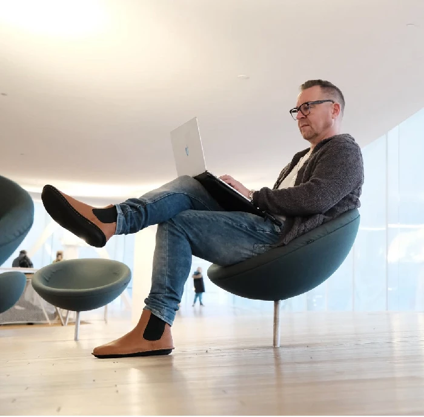

COACH
COACHUravalmennus
Suunta ja strategia uralle. Uravalmennuksessa selkeytät vahvuutesi, arvosi ja tavoitteesi — ja rakennat konkreettisen suunnitelman uuden työn tai urapolun löytämiseen. Asiakkaistani 100 % on löytänyt uuden työn tai uran.

Uravalmennuksen hyödyt
- Selkeä suunnitelma uratavoitteidesi saavuttamiseksi
- Omien vahvuuksien ja mahdollisuuksien tunnistaminen työmarkkinoilla
- Toimivat työnhakustrategiat ja vakuuttava CV
- Verkostoitumismahdollisuuksien löytäminen
- Luottamus ja itsevarmuus uravalintoihin
Voit löytää valmennuksen avulla kokonaan uuden urapolun — tai rakastua nykyiseen työhösi uudelleen, kun kirkastat itsellesi, mikä sinulle on oikeasti oleellista.
Näin autan sinua eteenpäin
Yksilöllinen urasuunnittelu
Räätälöity suunnitelma, joka ottaa huomioon taitosi, kiinnostuksesi ja markkinatilanteen.
CV ja hakemukset
Vakuuttava ansioluettelo ja hakemuskirje, jotka erottavat sinut muista hakijoista.
Haastatteluvalmennus
Valmistaudut haastatteluihin niin, että osaat tuoda parhaat puolesi esiin luontevasti ja itsevarmasti.
Muutosturvavalmennus 55 vuotta täyttäneille
Jos olet täyttänyt 55 vuotta ja sinut on irtisanottu tuotannollisista tai taloudellisista syistä, sinulla voi olla oikeus laajennettuun muutosturvaan — siihen kuuluu muun muassa enintään kuuden kuukauden muutosturvakoulutus, jonka tavoitteena on nopea uudelleentyöllistyminen. Koulutus on osallistujalle maksuton, ja sen järjestämisestä vastaa työvoimaviranomainen.
Tarjoan muutosturvavalmennusta, jossa yhdistyvät uravalmennuksen parhaat työkalut: vahvuuksien ja osaamisen kirkastaminen, urasuunnan löytäminen, CV:n ja hakemusten hiominen sekä haastatteluihin valmistautuminen — tarvittaessa myös yritystoiminnan käynnistämisen tuki.
Olet oikeutettu laajennettuun muutosturvaan, jos:
- Olet täyttänyt 55 vuotta viimeistään irtisanomispäivänä
- Sinut on irtisanottu tuotannollisista tai taloudellisista syistä 1.1.2023 tai sen jälkeen
- Olet ollut saman työnantajan palveluksessa vähintään 5 vuotta
- Ilmoittaudut työnhakijaksi 60 päivän kuluessa irtisanomisesta
Lue lisää muutosturvasta ja sen ehdoista: Työmarkkinatori — Laajennettu muutosturva 55 vuotta täyttäneille
Muutosturvaan kuuluu myös:
- Muutosturvaraha — keskimäärin yhden kuukauden palkkaa vastaava summa
- Muutosturvakoulutus — kesto enintään 6 kuukautta, osallistuminen vapaaehtoista
- Pidennetty työllistymisvapaa — 5, 15 tai 25 päivää tilanteesta riippuen
Ota yhteyttä, niin katsotaan yhdessä, miten muutosturvavalmennus saadaan käyntiin sinun tilanteessasi — autan myös käytännön järjestelyissä työvoimaviranomaisen kanssa.
Ota askel kohti uutta uraa
Kartoitetaan tilanteesi ja rakennetaan suunnitelma, jolla pääset tavoitteeseesi.